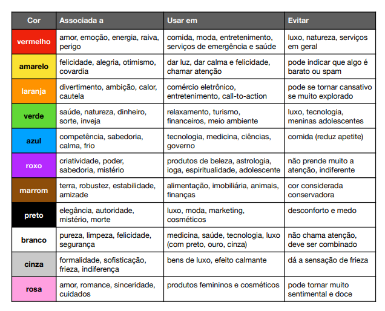

Piscologia das Cores
- Jamais subestime o poder das cores, elas podem influenciar na
quantidade de tempo que seu visitante passa visitando o seu site
e pode até mesmo ser um poderoso critério de decisão para uma
compra.
-
Segundo Neil Patel
em seu artigo Como cores afetam
conversões afirma que as pessoas levam cerca de 90 segundos para decidir se
querem ou não um produto, e que 90% dessa decisão se baseia na sua cor.
- Existem alguns estudos que informam que pessoas se interessam por conteudo dos produtos ou sites pelas cores, embalagens, cores utilizadas de forma harmonica. Esses estudos informam que esses estudos são tomados pelo nosso subconsiente, por isso é muito importante sabermos a importância das cores, pois escolher uma boa paleta de cores e boa harmonia é extremamente importante para desenvolver um site
- HP, Dell, Linkedin, Facebook, Twiter são empresasque utilizam azul em seus sites, não é conencidência, pois a cor azul representa competência,, segurança, confiança integridade, calma. Além disso a cor azul é a cor mais aceita mundialmente falando, uma taca de aprovação de 46% e tem a menor taxa de rejeição, apenas 1%.
Tabela Sugestiva de Cores e formas de se Usar
